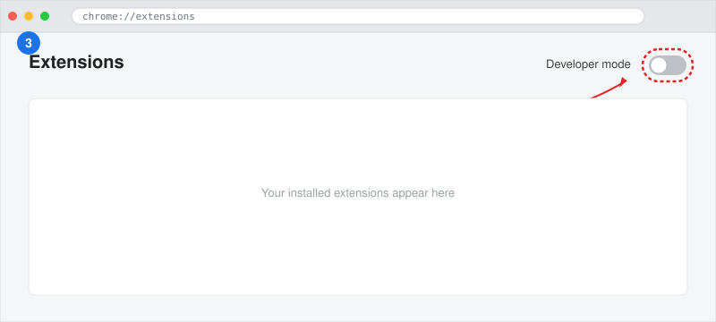
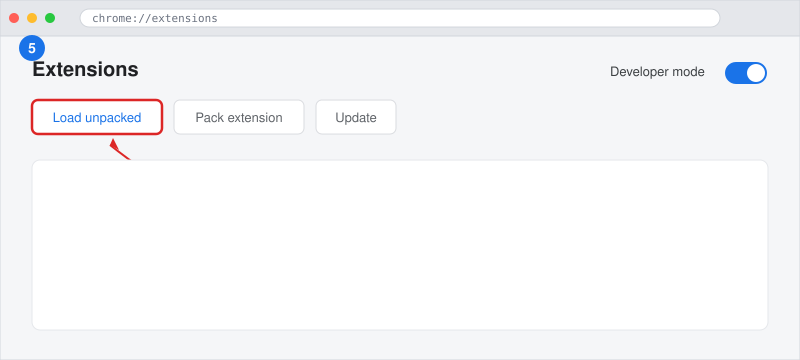
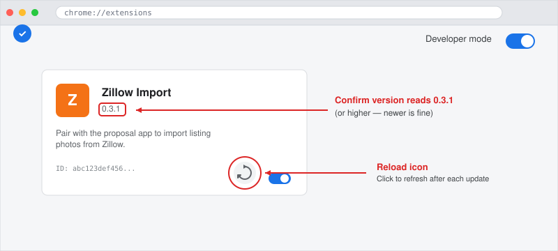

This extension lets the HHI Proposal app import listing photos and details from Zillow into a project. One-time setup, about 3 minutes.
zillow-importer-x.y.z.zip file Steve sent you
Move the zillow-importer-x.y.z.zip file to a folder you
won't accidentally delete later. A Tools or Apps
folder under Documents works well.
.zip →
Extract All… → pick the same folder, click
Extract. You'll get a folder named zillow-importer-x.y.z
containing files like manifest.json, background.js, etc..zip. It expands into
a folder next to it.In Chrome, paste this into the address bar and hit Enter:
chrome://extensions
(You can't click a regular link to chrome:// URLs — Chrome
blocks it. Copy and paste manually.)
Top-right corner of the extensions page, flip the Developer mode toggle to ON. Three new buttons appear: Load unpacked, Pack extension, Update.

A folder picker opens. Navigate to the zillow-importer-x.y.z
folder you extracted in step 2. Click Select Folder
(Windows) or Open (Mac).

A new card appears on the extensions page:

Click the puzzle-piece icon to the right of Chrome's address bar, find Zillow Import in the dropdown, click the pin icon next to it. The Zillow Import icon now lives next to your address bar so you can see when it's active.
https://app.hhi-builders.com and sign in.If the connection works, you'll see the Zillow URL input field directly (no "Connect Browser" modal). You're done.
If you still see the Connect Browser modal after step 7, see Troubleshooting below.
Go to chrome://extensions, find Zillow Import,
and click the circular reload icon (looks like ↻) on
its card. Then refresh the proposal app and try again.
If that doesn't fix it, confirm the version on the extension card reads
0.3.1 or higher. If it reads 0.3.0 or lower, the
cached build is stale — repeat steps 1–5 with the new .zip Steve sent.
Chrome shows this once per browser restart when any developer-mode extension is loaded. It's expected. Click the X to dismiss; it does NOT mean the extension is broken. Chrome behaves this way on purpose to discourage installing random unsigned extensions — for one we built in-house, you can ignore it.
If the warning is annoying you, the medium-term fix is publishing the extension to the Chrome Web Store (no developer mode required). Talk to Steve if you want that prioritized.
Click it, screenshot whatever's there, send it to Steve. Almost always this is a stale download — re-extract the .zip and click Reload.
That button is a known limitation — Chrome blocks pages from
programmatically opening chrome:// URLs. Use step 3
above (paste chrome://extensions into the address bar manually).
When Steve sends you a new .zip (different version number in the
filename):
chrome://extensions, find Zillow Import.(There's a shortcut: if the folder path stays the same and you just overwrite the contents with the new files, you can hit the reload icon on the existing card instead. But removing and re-adding is foolproof.)
chrome://extensions → Zillow Import card →
Remove. Done. The app's "Connect Browser" modal will reappear
next time you click Import from Zillow, so you can always reinstall if
needed.